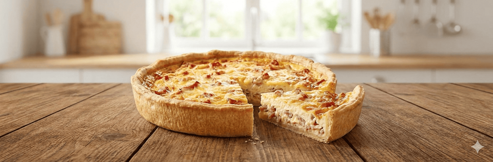

Quiche Lorraine

- 🕒 Tiempo: 1h 15min
- 👩🍳 Dificultad: Media
- 🍽️ Porciones: 8
Rústica, cremosa y elegante; un viaje directo a la cocina francesa en cada bocado crujiente y ahumado.
Ingredientes
- 200g de panceta ahumada en tiritas o cubos (bacon).
- 3 huevos grandes.
- 200cc de crema de leche (nata).
- 150cc de leche entera.
- 150g de queso Gruyère o Emmental rallado (la receta original purista no lleva queso, pero esta versión es mucho más rica).
- Sal, pimienta negra y nuez moscada (clave).
Preparación
- Forrar el molde con la masa. Pinchar la base con un tenedor. Si tienes tiempo, dale una pre-cocción de 10 minutos en horno medio (180°C) para que no quede cruda abajo.
- En una sartén (sin aceite), dorar la panceta hasta que esté algo crujiente y haya soltado su grasa. Escurrir la grasa sobrante y reservar.
- En un bowl, batir ligeramente los huevos con la crema, la leche, sal (poca, por la panceta), pimienta y nuez moscada.
- Distribuir la panceta dorada sobre la base de la masa. Esparcir el queso rallado por encima.
- Volcar la mezcla líquida de huevos y crema con cuidado sobre el relleno sólido.
- Llevar al horno precalentado a 180°C durante unos 30 a 40 minutos, hasta que la superficie esté dorada y al mover el molde el relleno se note firme (como un flan). Dejar entibiar antes de cortar.